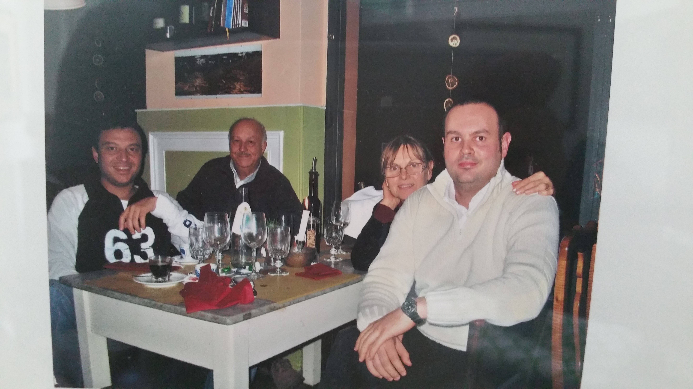

Federico Di Marco - My personal pages (fededim.github.io)

I’m a senior software engineer, born in Genova, Italy, with a master degree in computer science, in the second half of his forties.
Started using a computer at six years, gone through logo, basic, assembly, C/C++, java and finally to .NET and .NET core. Proficient also in databases, especially Sql Server and reporting. Let’s say I have also some experience on security but mainly in the past, now things have become much more difficult and I do not have too much time to keep me updated, but sometimes I am still kicking in.
Fan of videogames, technologies, motorbikes, travelling and comedy.
- Personal: fededim@gmail.com
- Work: federico.dimarco@gmail.com
Instant Messaging
- Telegram: (for sexy women :-)
Social medias
- Github
- NuGet
- Stackoverflow
- Instagram: on February 2025 my "older" Instagram account was disabled due to an anonymous tip-off for a harsh reply I did on a slanderous post directed to me, you can find a partial mirror updated up to September 2024 on my personal website.
- YouTube
Music
Personal Certificates
Diploma
Scientific Lyceum diploma (1996): Certificate (2024) Papyrus
{kind=link}
Master degree in computer science
Master degree in computer science - University of Genova (2002): Certificate (2011) Certificate (2023) Papyrus
{kind=link}
Master degree in computer science - University of Udine (2004): it is basically the same degree as the original one from Genova, except that with this one I was able to apply for the engineer board examination in computer science (newer graduates after Moratti's reform of university were allowed, older ones not due to a quirk of the italian law, I had to integrate two exams in order to receive essentially twice the same degree). Certificate (2005) Certificate (2023) Papyrus
{kind=link}
Qualifying examination for engineer in computer science (2005): Certificate (2023) Papyrus
{kind=link}
Language
English: CAE: Cambridge Advanced English certificate (2014) FCE: First Certificate in English certificate (2004)
IT
Agile
Certified SAFe 6 Practitioner: Certificate (2023) [expired]Architecture
Archimate: Certificate (2016) Scoring (2016){kind=link}
TOGAF Certified: Certificate (2013) Scoring (2013)
{kind=link}
TOGAF Foundation: Certificate (2013) Scoring (2013)
{kind=link}
Project Management
Prince2 Practitioner: Certificate (2013) [expired]Prince2 Foundation: Certificate (2013)
IT Service Management
ITIL V3 Foundation: Certificate (2011) Confirmation Letter (2011) Scoring (2011){kind=link}
Various
Shooting: for a very small part of my life I trained at dynamic shooting with a Glock 17 calibre 9mm and I obtained a Bronze certificate. I was very quick at shooting "looking like a hitman" and I was made a video, however I can't find it anymore. I am not an expert with guns and I choose a Glock due to the first Die Hard movie, where the main actor Bruce Willis talked about the Glock, a gun stated there to be made up porcelain whereas it is actually made partially with a polymer giving it the lightness as main characteristic.
Certificate (2012)
{kind=link}
UAS (drones): I have achieved both A1/A3 and A2 certificates for operating drones, only in open categories. Fow now I have flown with a DJI Mini 3 PRO which paradoxically wouldn't require any license, however for the law if you fly in a red zone or you have an incident with the UAS (e.g. collision with an obstacle) without reporting it to the national italian flight agency (ENAC) within 72 hours you are prosecutable.
IT activity
You can find below copies of my articles published on the CodeProject which unluckily was shutted down in October 2024.
Articles
Fededim.Extensions.Configuration.Protected.DataProtectionAPI (Demo video about its use)
How to Transform Binary Files into Powershell Script(s)
in Order to Copy them Silently on a Server
ProtectedJson_ Integrating ASP.NET Core Configuration and Data Protection
SyncEvent_ The missing Java Event Class
Tips And Tricks
How to Automate Saving Webpages as a Single .MHTML Files using Selenium Webdriver
How to Enable Bitlocker Hardware Encryption on SEDs
Query Excel or CSV files with T-SQL
spSearchTables_ Search and Find Tables or Columns by Name or Value
VPNScripter_ A Scripter for Windows’ VPN Connections
Git cheatsheet (this one is unpublished)
Retrofits
I am an owner of a Golf MK7.5 and I have written some detailed guides for a few optionals I retrofitted, you can find them here:
- Volkswagen Golf MK7.5 Facelift Heated Windscreen Retrofit
- Volkswagen Golf MK7.5 Facelift Lane Assist Retrofit
- General overview video
- Firmware and associated parameter files with warning time increased from 15 seconds to 60
- How to hack a Volkswagen Golf Power steering ECU (very interesting article)
- Calibration: it is the process of determining both extrinsic and intrinsic camera parameters (like camera coordinates, focal length, optical center) once installed. It is a mandatory process needed to perform any kind of calculation on an image, like measuring a distance between pixels, estimate depth or 3d structure. It is performed using a predefined calibration pattern consisting of a sheet where a set of objects of a predetermined shape (like squares, circles), size and position is put in front of the camera at a precise distance.
Every camera manufacturer has its own calibration pattern; for Volkswagen it is called VAS 6430. Usually you have to perform calibration at carglass centers where they have all the needed equipment, but if you are skilled enough and you know what you are doing you can perform it by yourself using either official VW ODIS (guided procedure) or OBD11, I quote here an untested OBD11 procedure which I found on a Skoda owner website:
- Position the car in front of the calibration pattern as in this picture
- Measure 4 wheel arches and go to module A5 Front Sensors Driver Assistance System performing the security access with code 20103
- Change diagnostic service --> VW
- Go to Adaptation (confirm all values!)
- Body height wheel house edge-Body height left front wheel house edge --> Enter value
- Body height wheel house edge-Body height right front wheel house edge --> Enter value
- Body height wheel house edge-Body height left rear wheel house edge --> Enter value
- Body height wheel house edge-Body height right rear wheel house edge --> Enter value
- Distance to calibration field --> Enter 1500
- Calibration target position --> Just confirm
- Axel offset --> Just confirm
- Go to Basic Configuration
- Search calibration target
- Initial online configuration
- Static calibration costumer service
- Change diagnostic service --> End of assembly line
- Basic Configuration --> Static calibration end of assembly line
If everything is fine the fault about "No basic settings" should be removed and this marks the end of the static calibration (called static because the car is not moving). Since this calibration is never perfect the lane assist camera A5 after this phase enters another calibration phase called dynamic because it is performed automatically by the camera while you drive (you have to drive for at least 500 kms), the more you drive, the better the calibration will be fine-tuned, you can check this in the Live Data menu option (Dynamic calibration, status and Dynamic calibration, details).
{kind=link}
Here you can find good-res pictures (sorry taken using a mobile) of PCB of blind spot assist radar 5QD907685 rev. H12: (Front 1 Front 2 Back 1) which I disassembled in order to update the firmware of the slave (left) control unit, unluckily I was unable to find on this hardware revision any eeprom chip (it is integrated in the BGA SOC) and also even a serial header (when I have some time I'll try to desolder the SOC and track the path on the PCB to identify the UART pins or if I bother I'll buy two new control units).
{kind=link}
{kind=link}
{kind=link}
This is the part list I was able to identify (I am not an electronic engineer though I know a little bit of digital electronics):
A5973A E8213 - variable switching regulator (1.2-35V)
532RQ K221 - oscillator
NXP A1051/3 CIMH43 Tn2391 - high speed CAN BUS transceiver
BGT24ATR12 2FT H2017 - radar sensor 24Ghz
WR19906 - HEX buffer and line driver
6002E 212MM9 - Op Amp
HC365 WR19906 TnD19 14B - 3 state Hex Buffer
99167 RRS - ????
AD8648 A#226 2904 - 24 MHz Rail-to-Rail Amplifiers with Shutdown Option
TMS 320F28235ZJZQ CA-28ZLE43 G1 - Automotive C2000™ 32-bit MCU with 150 MIPS, 512 KB flash, EMIF, 12b ADC
ISSY 2228 IS64WV12816DBLL 12BLA3 8152 DSU868Y1 - 2Mb static ram
SJT TI 27K AHKL - ????
Various
Here you can find other guides I wrote about my DIY projects.
How to turn an IKEA FLUGBO into a smart floor lamp (General overview video)
Useful software/websites
- Ventoy: a must have for any it engineer or enthusiast, its motto can be summed up in "One USB key to rule them all". This tool allows you to create a bootable usb drive supporting multiple iso images in just one partition. Essentially you create only one single big partition on your USB drive where you install initially Ventoy and then you copy one or more iso images (several formats supported) as standard filesystem files. When Ventoy boots it will ask through a simple menu which iso image you want to mount and boot.
- StatusCake: it is a fully featured website monitoring tool. It has a free tier supporting https and free notifications to one or more Telegram users.
- Dynu: it is a simple dynamic dns service, but it has a free tier allowing free subdomains and custom dns records, manageable also through a REST api.
- OBS Studio: it is a free, open source, multi-platform software for multi-source video recording (e.g. desktop + webcam) and streaming which you can use for making videos or presentations.
- Drone Class: it is one of the cheapest online training for obtaining the theoretical EU drone licenses. It provides online learning environment, unlimited resits to (online) proctored exams and digital delivery of certificate.
- Coverdrone: it is an online and one of the cheapest drone insurances (also for commercial operators).
- VNCI SHOP: it is the online official shop for VNCI interfaces, the cheapest and most featured OBD-II interfaces for retrofitting and tweaking your car (almost all brands). For VW group you can buy the VNCI 6154A which is fully backwards compatible with the original Volkswagen VAS 6154A interface and ODIS software at a bargain price!
- OBDeleven: it is a very usable mobile app with its own OBD-II dongle for coding and retrofits for VW group and other brands vehicles (though less powerful than the combination of VNCI 6154A + ODIS).
- Jellyfin: it is a free, open source, multi-platform DLNA media server (based on .NET core!) which allows you to stream your local media (audio, video or pictures) to your home network performing transcoding when needed. It is the only free I found supporting hardware transcoding (it uses FFmpeg underneath).
- ImDisk Toolkit: it is a free virtual disk driver to mount iso images on Windows, but it allows you also to create one or more ram disk drives. A ram disk drive was native on Amiga, a leading eighties’ home computer now almost dead; I use this tool mainly to allow Jellyfin to store temporary transcoding files in RAM without wearing my SSD TBW (terabytes written).
- Musicolet: it is a free Android app for listening and managing local music files supporting also the display of embedded ID3 lyrics.
- Soundiiz: it is a very good and cheap website allowing export/import/conversion of playlists across several media services (Spotify, YouTube, etc.) (5€ for a month access for unlimited playlist conversions), though sometimes it fails to convert.
- iSmartGate: it allows you to turn your existing automated garage/gate door opener into a smart one connected to internet, remotely controlling it by any smartphone app or voice assistant (Google, Siri, Alexa) allowing automation routines to be defined (open the garage and turn on a WIFI bulb, automatically close the garage door/gate when I distance from home through geo-fencing, etc.). It includes a battery powered sensor to track the status of the door/gate (open/closed) and the garage temperature.
- SmartThings: it is a free mobile app (all platforms) by Samsung for managing smart devices and defining automation routines. It allows you to create a widget on the smartphone main screen connected to a user defined automation routine.
- Stacksocial: it is an US website providing good and sometimes bargain offers on products and services. Being a European I used it mainly in the past to buy IT products licenses or lifetime VPN services, which were actually lifetime, even though some of them went bankrupt :-)
My family
"Di Marco" family picture (at a restaurant in 2006) (from the left)
- Alessandro: my elder brother, a software engineer graduated in computer science like me too. He is tough more focused on Linux than on Windows like me and he introduced me to the computers since I was six.
- Walter: my father, he was from Sulmona, Abruzzi, the town famous for the sugared almond. He studied at classical liceum, then he graduated in industrial chemistry and became a quality control executive at Italsider, the largest steel group in Italy.
- Anna (Cardinale): my mother, she was from Genova and she worked for almost all her life at a local bank called Carige.